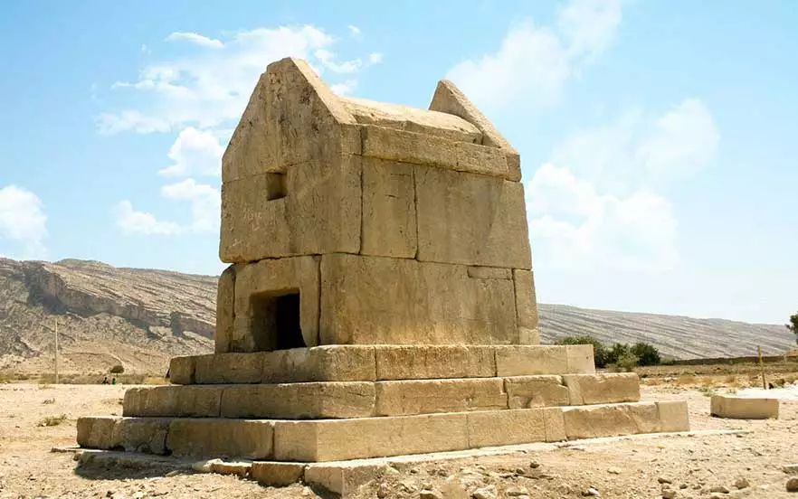

در نزدیکی برازجان، یکی از جاهای دیدنی بوشهر به نام گور دختر قرار دارد که جزء میراث تاریخی و فرهنگی ایران به شمار میآید. ساختار و سنگهای این مکان شباهت زیادی به آرامگاه کوروش کبیر دارد. آرامگاه گور دختر با وجود کوچک بودن فضای داخلی خود دارای ویژگیهای خاصی است. قسمت فرورفتهای که شبیه به یک قاب است، احتمالاً محلی برای قرارگیری کتیبه یا نشانه مربوط به فرد مدفون بوده است. نداشتن ملات و استفاده از بستهای فلزی توکار برای اتصال سنگها در گور دختر نشان از این دارد که این بنا از سازههای ابتدایی و سنتی هخامنشی است. آدرس: استان بوشهر، دشتستان، دشت میانکوهی پشت پر
